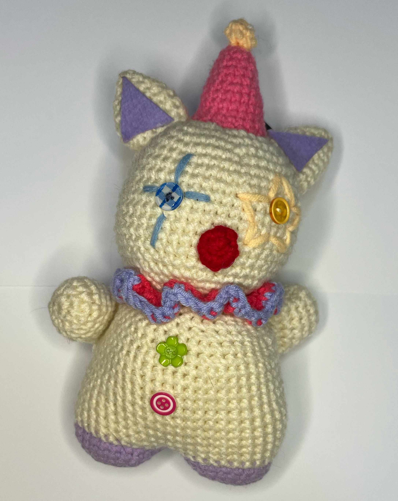

Products
Crochet Clown Plushie
₱300

Crochet Cat Clown Plushie
₱1,000
Crochet Cat Clown Plushie
₱1,000

Mocha Crochet Keychain
₱200
Mimi's anikanik Logo Pins
₱40

Crochet Flowerst
₱100
Phone Charms and Necklace
₱150
handmade crafts
During the Munimuni Alegorya album tour,I crocheted this tapestry for this event which I was invited to and sold it one of the members of the band "Muni muni."
This was my second time trying to crochet a tapestry and it took weeks to finish it.
This was an alt-poster for an art market I was invited to. It was a requirement for all merchants to promote this event.
"Mimi's anikanik is a small creative business celebrating the art of handmade, colorful crochet and beaded crafts. Every piece I make is a burst of color and personality—thoughtfully designed to reflect your unique style. From vibrant crochet accessories to playful beaded jewelry, my work combines traditional techniques with a modern, joyful twist. Each item is lovingly handcrafted, making every creation one-of-a-kind. Mimi's anikanik is named after my cat:) she was with me eversince I started my own business. My business was first named as "ange's crochet cove" and it started during pandemic because of boredom, I wanted to try new hobbies and later on turned it into a business."
Manangan, Angelica
leave message below